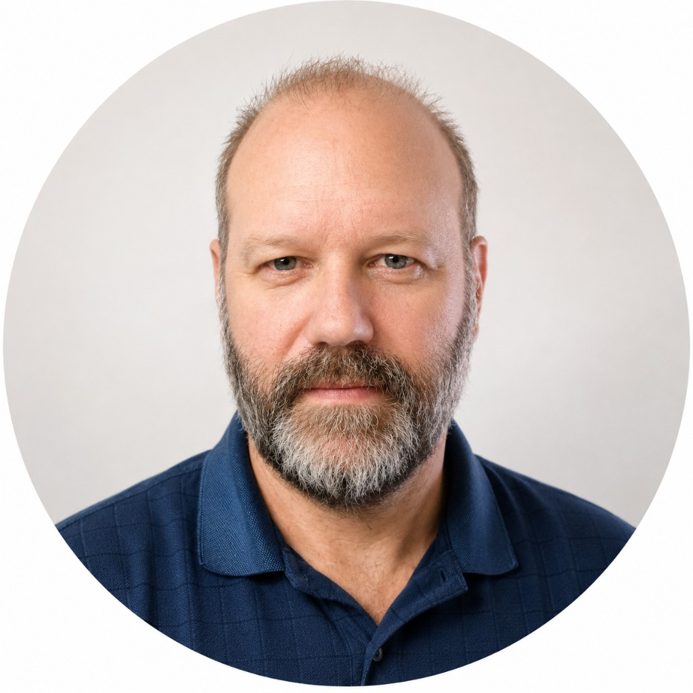

À propos

Mes parents me répétaient souvent :
« Ne fais pas aux autres ce que tu ne voudrais pas qu'on te fasse. »
Avec le temps, j'en ai fait ma propre philosophie :
« Fais aux autres ce que tu voudrais pour toi. »
Aujourd'hui encore, cette idée guide chacune de mes décisions.
Depuis plus de 30 ans, l'informatique fait partie de ma vie. J'ai commencé par curiosité, puis par passion, en créant des sites web, des outils et des projets personnels pour résoudre des problèmes concrets. La plupart de ces projets sont nés d'un irritant du quotidien : une situation qui pouvait être simplifiée, améliorée ou rendue plus agréable.
Pendant plus de 15 ans dans les télécommunications, j'ai appris à diagnostiquer rapidement des problèmes, à travailler sous pression et à livrer des solutions fiables. Cette expérience m'a appris qu'une bonne solution ne repose pas sur le hasard. Elle repose sur une bonne compréhension du problème, une communication claire et une exécution rigoureuse.
Aujourd'hui, cette philosophie est au cœur de Weidler Studio.
- J'écoute avant de proposer une solution.
- Je préfère poser une question de plus plutôt que de partir sur une mauvaise hypothèse.
- Je cherche à comprendre la cause d'un problème plutôt que d'en corriger uniquement les symptômes.
Lorsque je développe un logiciel, je le conçois comme si j'allais l'utiliser moi-même pendant des années. Je privilégie des solutions simples, fiables et durables, pensées pour évoluer dans le temps et rester agréables à utiliser.
La détermination fait partie de ma façon de travailler. Lorsqu'une solution peut être améliorée, je continue à la faire évoluer jusqu'à être convaincu qu'elle répond réellement au besoin.
Au final, ma plus grande satisfaction n'est pas simplement de terminer un projet. C'est de savoir que le client est réellement heureux du résultat.